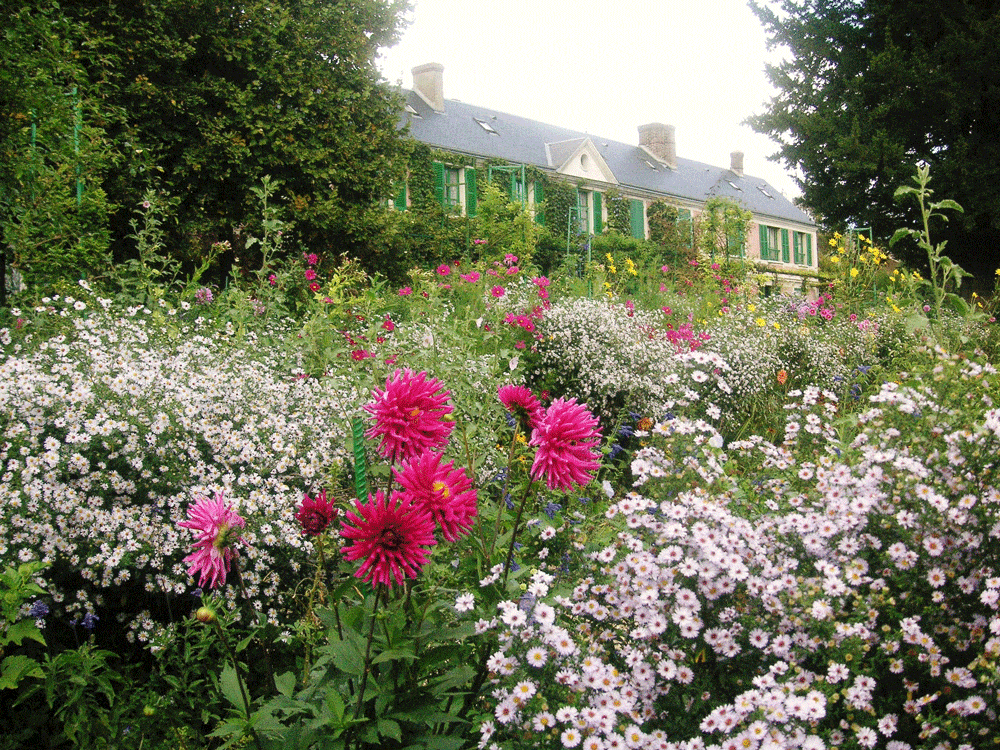

La maison de Monet
Claude Monet est un peintre très célèbre. Il est né en 1840 à Paris. On dit qu’il est le chef de l’école impressionniste. C’est lui qui a peint en 1872 « Impression soleil levant », c’est un paysage du Havre (Le Havre est une ville située au nord de la France). Le titre de ce tableau est à l’origine du mot « impressionnisme ».
Apprendre le Français - La maison de MonetClaude Monet a habité à Giverny, une ville située en Normandie. Il a vécu dans une maison rose très jolie à partir de 1883 et il y est resté jusqu’à sa mort, en
1926. Cette maison est devenue le musée Claude Monet.
Elle est comme autrefois parce qu’on l’a restaurée. Dans la maison, on peut voir la chambre, la cuisine ou la salle à manger de Monet. Tout est resté comme avant. On peut aussi voir sa collection de peintures japonaises. On appelle ces peintures des estampes. Autrefois, tous les impressionnistes avaient des estampes. Dans cette maison, on a gardé une très belle collection.
À côté de la maison, on peut voir deux ravissants jardins. Ces jardins ont beaucoup de charme. Dans le jardin d’eau, on peut voir le fameux pont japonais. On voit ce pont dans les tableaux « les Nymphéas ». Les arbres, la petite rivière, tout est resté semblable aux peintures de Monet.
Apprendre le Français - La maison de Monet Il y a un autre jardin près de la maison. On peut y admirer des fleurs et des arbres magnifiques. Si vous voulez vous promener dans un décor merveilleux, il faut y aller en automne ou au printemps. Le musée et les jardins sont ouverts du premier avril au 31 octobre. C’est ouvert de 9h30 à 18h tous les jours sauf le lundi. La visite du musée et des jardins dure environ une heure ou deux. Pour plus d’informations, vous pouvez aller sur le site du musée. Je vous donne l’adresse : www.fondation-monet.com. Vous pouvez aussi téléphoner directement. Voici le numéro de téléphone : 02 32 51 28 21.

(Recuerda que las respuestas deben escribirse en francés)
Envoyer
Retour